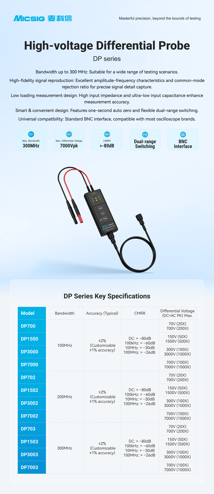

DP Series · DP700 to DP7003
Model options pair different bandwidth and attenuation ranges. Datasheet examples include DP700/1500/3000/7000 variants and 200/300 MHz DP models.
DP Series specifications → · Open product introduction PDFExplore Micsig DP Series high-voltage differential probes for floating and high-common-mode measurements. Compare bandwidth and model-dependent differential input range, then open the product introduction for full specifications.
Request product guidanceA differential probe measures the voltage difference between two input points while rejecting common-mode voltage. The Micsig DP Series includes model families with 100 MHz, 200 MHz and 300 MHz bandwidths, and differential input ranges reaching up to 7000 Vpk on specified models.

Model options pair different bandwidth and attenuation ranges. Datasheet examples include DP700/1500/3000/7000 variants and 200/300 MHz DP models.
DP Series specifications → · Open product introduction PDFThe DP Series product information also lists one-button calibration, overload indication, dual voltage ranges and a 5 MHz bandwidth-limit function. Review the complete datasheet for the specific model’s attenuation, voltage range, impedance, accuracy and operating conditions.
Engineers commonly evaluate differential probes for switching power supplies, power conversion, semiconductor and motor-drive measurements where the voltage difference must be measured in the presence of common-mode voltage. Confirm the input differential limit and common-mode limits for the exact setup.
Do not select a probe based on the series maximum alone. Input voltage, attenuation and bandwidth vary by model; consult the Micsig product PDF and instrument requirements before use.